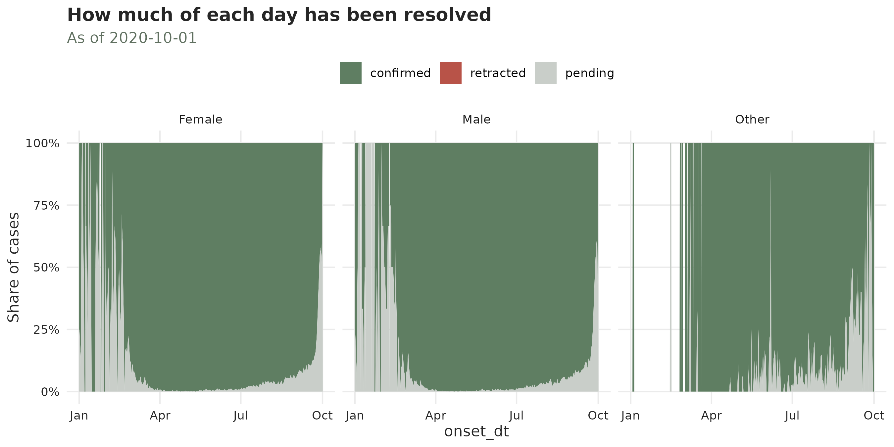
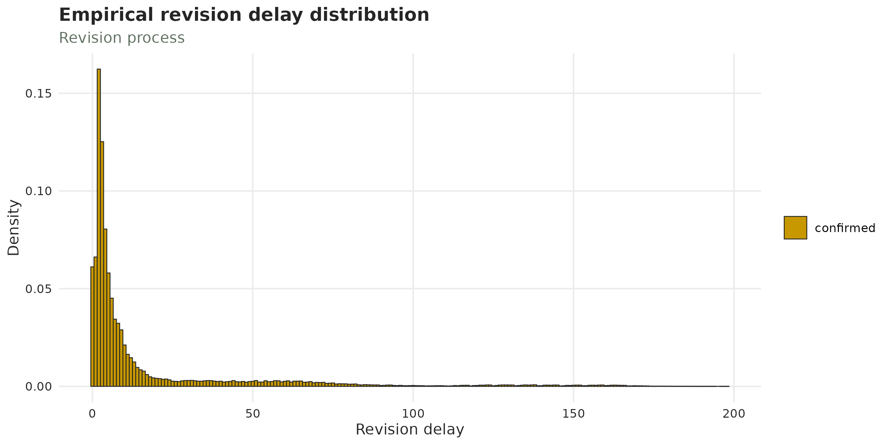
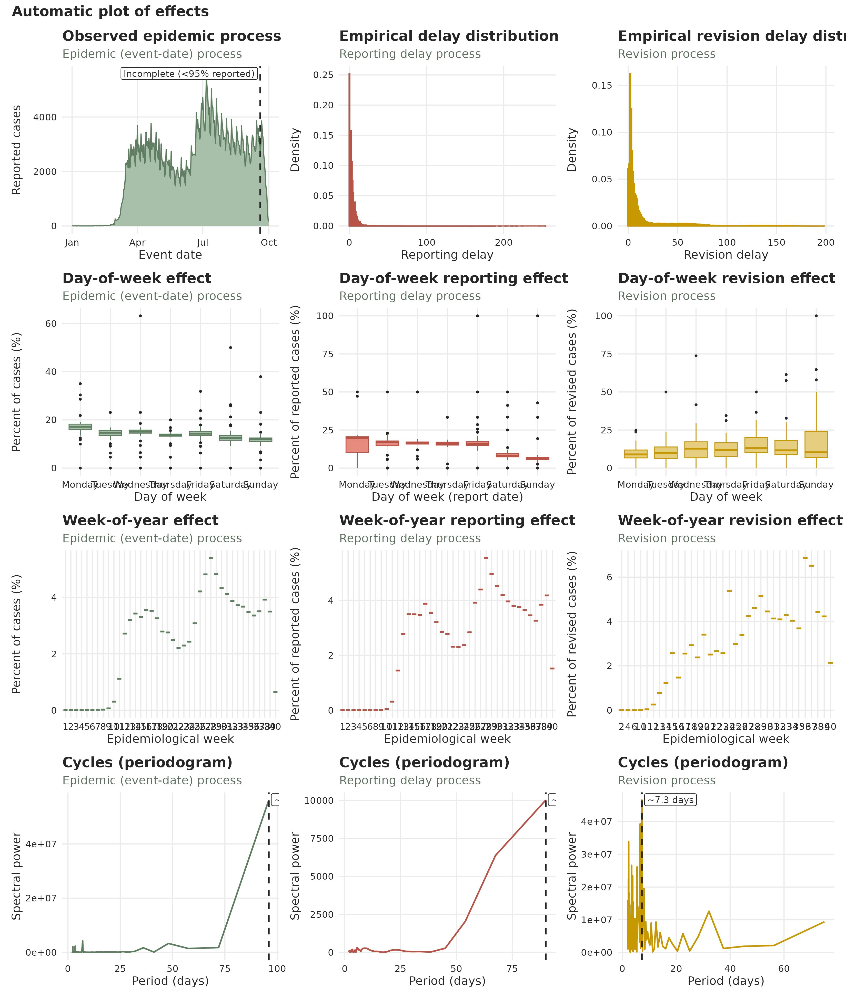
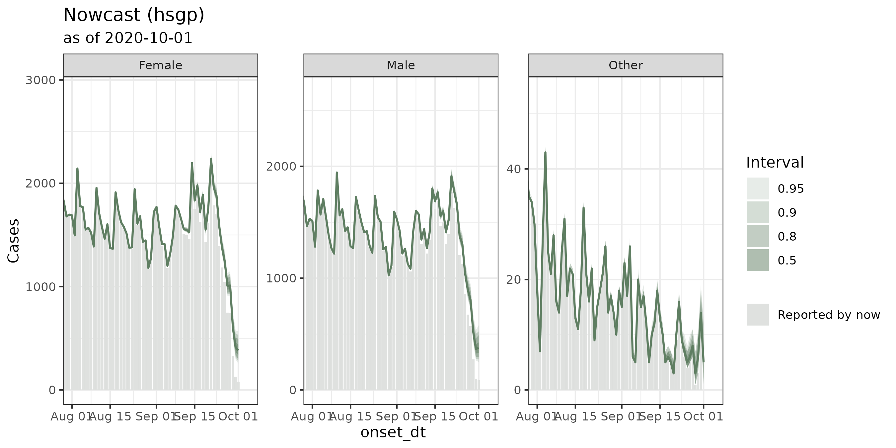
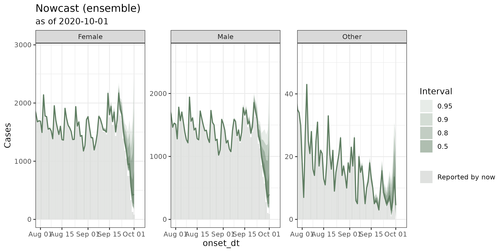

The nowcasting workflow 2: COVID-19 case surveillance with revisions in the United States
Source:vignettes/articles/example_revisions.Rmd
example_revisions.RmdThis article is the sequel to the
nowcasting workflow. That one used two dates: the
event_date for when a case happened, and the
report_date for when it was registered in the system. This
one adds the third revision_date for cases
that can be revised to be either confirmed or rejected.
In surveillance contexts, a record might arrive before anybody knows
whether it is real case. A specimen might be collected, a case
registered in the system, and only later does a laboratory settle it.
Maybe additional information comes along that causes the patient to be
de-registered (for example the case was registered twice or it did not
belong to the population of interest). tbl.now calls that
third date the revision date, and models the following
process
\texttt{event} \to \texttt{report} \to \texttt{revision}
A case that has not been settled yet is called
"pending": it has been reported, but may still need to be
confirmed (and/or retracted). Pending cases are the reason the
revision axis exists. as it allows for a nowcast to
decrease based on how many we expect to be retracted.
For this tutorial, we assume you have read the previous
one which included how to build a tbl_now(),
diagnose(), and summarise(). We’ll move
through those sections quickly here while focusing only on specific
methods for the third date.
1. The data
covid_us is an aggregation of the U.S. CDC’s
individual-level COVID-19 case surveillance database for 2020. Each row
is a unique combination of three dates, a status and a sex, with the
number of cases n.
data(covid_us)
covid_us#> onset_dt pos_spec_dt cdc_report_dt current_status sex n
#> 192948 2020-12-31 2020-12-31 2020-12-31 Laboratory-confirmed case Female 516
#> 192949 2020-12-31 2020-12-31 2020-12-31 Laboratory-confirmed case Male 490
#> 192950 2020-12-31 2020-12-31 2020-12-31 Laboratory-confirmed case Unknown 4
#> 192951 2020-12-31 2020-12-31 2020-12-31 Probable Case Female 173
#> 192952 2020-12-31 2020-12-31 2020-12-31 Probable Case Male 148
#> 192953 2020-12-31 2020-12-31 2020-12-31 Probable Case Unknown 13The three dates are the following:
-
onset_dt— theevent_date: symptoms begin. -
pos_spec_dt— thereport_date: when the surveillance system first saw the case. -
cdc_report_dt— the `revision_date``: when the status as probable or confirmed was sent to the Center for Disease Control (CDC).
The data also includes a current_status as the outcome
that revision carries:
covid_us |> count(current_status)
#> current_status n
#> 1 Laboratory-confirmed case 165663
#> 2 Probable Case 27290For our nowcast we will model as if we were standing on the first day
of October 2020: 2020-10-01. To do so we get all of those
with reports before that date and we recode the cases that were
confirmed after then as Probable Case (the confirmation
would have not yet arrived by that date if they were confirmed
later):s
2. Pending means no settled revision
Here is the one rule that has no counterpart in the two-date workflow.
A row is "pending" because its revision has not
yet given a confirmed or retracted result, so a pending row
must have a missing revision date.
CDC’s "Probable Case" is a case that met the clinical
and epidemiological criteria without ever meeting the
laboratory-confirmed definition. In this package’s vocabulary those will
be the "pending".
Because the pending corresponds to the final confirmation and the probable cases have yet to be confirmed we will remove their report dates as the final confirmation has not happened for them and they have not settled yet as Laboratory-confirmed or not.
3. Building the tbl_now
In the tbl_now we add the revision_date and
revision_type. Furthermore we will utilize
revision_levels to translate the source’s vocabulary into
this package’s:
covid <- covid |>
tbl_now(
event_date = onset_dt,
report_date = pos_spec_dt,
revision_date = cdc_report_dt,
revision_type = current_status,
revision_levels = c(
"Laboratory-confirmed case" = "confirmed",
"Probable Case" = "pending"
),
case_count = n,
strata = sex,
data_type = "count-incidence"
)
covid
#> # A tibble: 117,085 × 11
#> # Data type: "count-incidence"
#> # Frequency: Event: `days` | Report: `days`
#> onset_dt pos_spec_dt cdc_report_dt current_status sex n .event_num .report_num .delay .revision_num .revision_delay
#> <date> <date> <date> <chr> <chr> <int> <dbl> <dbl> <dbl> <dbl> <dbl>
#> [event_date] [report_date] [revision_date] [revision_type] [strata] [cases] [...] [...] [...] [...] [...]
#> 1 2020-01-01 2020-01-01 NA pending Female 1 0 0 0 NA NA
#> 2 2020-01-01 2020-03-25 2020-09-05 confirmed Female 1 0 84 84 248 164
#> 3 2020-01-01 2020-03-27 2020-05-13 confirmed Female 1 0 86 86 133 47
#> 4 2020-01-01 2020-04-16 2020-04-25 confirmed Male 1 0 106 106 115 9
#> 5 2020-01-01 2020-04-16 2020-07-28 confirmed Female 1 0 106 106 209 103
#> # ────────────────────────────────────────────────────────────────────────────────────────────────────────────────────────────────────────────────────────────────
#> # Now: 2020-10-01 | Event date: "onset_dt" | Report date: "pos_spec_dt"
#> # Revision date: "cdc_report_dt" ("days") | resolved: 107360/117085
#> # Strata: "sex"
#> # ────────────────────────────────────────────────────────────────────────────────────────────────────────────────────────────────────────────────────────────────
#> # ℹ 117,080 more rowsThe tbl_now now also has a .revision_num
and .revision_delay.
Diagnosing
The diagnose() function runs the same structural checks
as before with some additional checks for the third date.
diagnose(covid)
#> ── Diagnosis of a <tbl_now> ────────────────────────────────────────────────────────────────────────────────────────────────────────────────────────────────────
#> 19 notes, 50 passed.
#>
#> Notes (19)
#> ℹ now/now_gap_event [Missing]: The last event date is 2 days before now ("2020-10-01").
#> → Everything in that window is still arriving; it is what a nowcast is for, and it is also what makes the last points of any plot look like a decline.
#> ℹ now/now_gap_event [Other]: The last event date is 35 days before now ("2020-10-01").
#> ℹ now/now_gap_event [Unknown]: The last event date is 1 day before now ("2020-10-01").
#> ℹ now/now_gap_report [Missing]: The last report date is 2 days before now ("2020-10-01").
#> ℹ now/now_gap_report [Other]: The last report date is 34 days before now ("2020-10-01").
#> ℹ now/now_gap_report [Unknown]: The last report date is 1 day before now ("2020-10-01").
#> ℹ strata/pending [Female]: 10545 cases are still pending, 3.5% of the stratum. 8190 of them have waited longer than the median turnaround of 5 days.
#> → A pending case has no revision date, so it is invisible to anything counting arrivals on the revision axis.
#> ℹ strata/pending [Male]: 8898 cases are still pending, 3.2% of the stratum. 6918 of them have waited longer than the median turnaround of 5 days.
#> ℹ strata/pending [Missing]: 209 cases are still pending, 34.7% of the stratum. 202 of them have waited longer than the median turnaround of 5 days.
#> ℹ strata/pending [Other]: 1 case is still pending, 20% of the stratum. 1 of them have waited longer than the median turnaround of 5 days.
#> ℹ strata/pending [Unknown]: 64 cases are still pending, 2.4% of the stratum. 55 of them have waited longer than the median turnaround of 5 days.
#> ℹ strata/pending: 19717 cases are still pending, 3.4% of all cases. 15366 of them have waited longer than the median turnaround of 5 days.
#> ℹ strata/size [Other]: The smallest stratum is "Other" with 5 cases, 0% of the total.
#> ℹ strata/sparsity [Other]: The sparsest stratum is "Other": 270 of the 275 days between the minimum event (2020-01-01) and the now (2020-10-01) carry no cases at all (98.2%, against 1.5% pooled over every stratum).
#> → A stratum that is mostly zeros is the one a per-stratum fit will struggle with; pooling it is often better than fitting it. When every stratum is mostly zeros the grid is finer than the data -- `aggregate_time_units()` coarsens it.
#> ℹ truncation/event_date [Female]: 12 event dates are younger than the 95th percentile of the delay, so their counts are still filling in; an estimated 17.4% of their eventual total has not arrived.
#> → This is right-truncation, and it is the reason to nowcast rather than a defect. Cut the series at "2020-09-19" to describe it instead.
#> ℹ truncation/event_date [Male]: 12 event dates are younger than the 95th percentile of the delay, so their counts are still filling in; an estimated 16.5% of their eventual total has not arrived.
#> ℹ truncation/event_date [Missing]: 10 event dates are younger than the 95th percentile of the delay, so their counts are still filling in; an estimated 18% of their eventual total has not arrived.
#> ℹ truncation/event_date [Unknown]: 10 event dates are younger than the 95th percentile of the delay, so their counts are still filling in; an estimated 21.1% of their eventual total has not arrived.
#> ℹ truncation/event_date: 12 event dates are younger than the 95th percentile of the delay, so their counts are still filling in; an estimated 17% of their eventual total has not arrived.
#>
#> ✔ 50 passed: declarations/temporal_effects, declarations/undeclared, duplicates/key, missing/cdc_report_dt, missing/current_status, missing/n, missing/onset_dt, missing/pos_spec_dt, missing/sex, negatives/count, now/event_date, now/now_gap_event, now/now_gap_report, now/report_date, now/revision_date, now/revision_type, ordering/event_to_report, ordering/event_to_revision, …, units/report_grid, and units/revision_grid
#>
#> ℹ 69 findings. Use `dplyr::filter()` or `tibble::as_tibble()` for the table.Specifically we can see that Other, Missing and Unknown aren’t very
frequent strata. Hence we’ll collapse them into a strata call “Other”.
To do so we use mutate to generate the new
sex_category variable and then change_strata()
to that so that tbl.now recognizes the new one:
#You can see that the strata is sex
get_strata(covid)
#> [1] "sex"
#Create the new sex category column
covid <- covid |>
mutate(sex_category = if_else(sex %in% c("Female","Male"), sex, "Other"))
#Substitute as the strata
covid <- covid |>
change_strata(sex_category)
#> Warning: *Non-unique*: 28 rows share a (onset_dt, pos_spec_dt, cdc_report_dt, current_status, sex_category) combination.
#> ℹ 1 column "sex" is not declared, so it splits each cell into several rows. Declare it with `strata = ` to model it separately, or `to_count()` to pool it
#> away. The `tbl_now_to_()` converters pool undeclared columns for you, so this is a warning rather than an error.
#and now is sex category
get_strata(covid)
#> [1] "sex_category"As we get no warnings from diagnose() we can conclude
that the data is in good shape.
4. Describing the revision process
Here we analyze some of the decision-process specific summaries. The other diagnostic summaries are already in the previous example
How much is still pending?
The prop_revision_type() function splits the cases by
outcome, overall and by stratum:
prop_revision_type(covid)
#> ── Summary of a <tbl_now> ──────────────────────────────────────────────────────────────────────────────────────────────────────────────────────────────────────
#> 8 rows in 1 component; strata: "Female", "Male", and "Other".
#>
#> composition
#> n = (event, report) cells in the category; total = cases in the category
#> quantity stratum n total prop
#> <chr> <chr> <int> <dbl> <dbl>
#> 1 revision_type = confirmed all 107332 561327 0.966
#> 2 revision_type = pending all 3895 19717 0.0339
#> 3 revision_type = confirmed Female 54189 292722 0.965
#> 4 revision_type = pending Female 1981 10545 0.0348
#> 5 revision_type = confirmed Male 51129 265655 0.968
#> 6 revision_type = pending Male 1700 8898 0.0324
#> 7 revision_type = confirmed Other 2014 2950 0.915
#> 8 revision_type = pending Other 214 274 0.0850
#>
#> ℹ Use `dplyr::filter()` or `tibble::as_tibble()` for the full schema.About 3% of cases are still pending, and the share barely moves between the two strata (which is a good sign, we don’t want the confirmation to vary by sex!).
This same idea can be visualized with
plot_revision_status() which shows how the confirmation has
varied by time:
plot_revision_status(covid, by = "sex_category")
How long does a case take to resolve?
The plot_delay_profiles() draws the distributions of the
delays between revision and report:
plot_delay_distribution(covid, axis = "revision")
Does the outcome change the delay?
The diagnose_revision_delay() function checks whether
the revision-delay changes between “confirmed” and “retracted” cases. In
our case because we don’t have retracted cases this function returns
NA. However, its usefulness is to be able to diangose
whether our models require just one revision-delay distirbution or two
(one for confirmed and one for retracted cases).
diagnose_revision_delay(covid)
#> # A tibble: 1 × 8
#> stratum n_confirmed n_retracted median_confirmed median_retracted difference statistic p.value
#> <chr> <int> <int> <dbl> <dbl> <dbl> <dbl> <dbl>
#> 1 all 107360 0 11 NA NA NA NAGetting the cases that survived the revision
The *_revised_cases() getters give you a slice of the
latest confirmed cases:
get_latest_revised_cases(covid, type = "confirmed")
#> # A tibble: 717 × 11
#> # Data type: "count-cumulative"
#> # Frequency: Event: `days` | Report: `days`
#> onset_dt pos_spec_dt .event_num .report_num cdc_report_dt sex_category current_status n .delay .revision_num .revision_delay
#> <date> <date> <dbl> <dbl> <date> <chr> <chr> <dbl> <dbl> <dbl> <dbl>
#> [event_date] [report_date] [...] [...] [revision_date] [strata] [revision_type] [cases] [...] [...] [...]
#> 1 2020-01-01 2020-09-04 0 247 2020-09-07 Female confirmed 6 247 250 3
#> 2 2020-01-01 2020-07-08 0 189 2020-08-17 Male confirmed 3 189 229 40
#> 3 2020-01-03 2020-04-24 2 114 2020-05-03 Female confirmed 1 112 123 9
#> 4 2020-01-03 2020-03-31 2 90 2020-04-05 Male confirmed 1 88 95 5
#> 5 2020-01-04 2020-07-06 3 187 2020-09-12 Male confirmed 1 184 255 68
#> # ────────────────────────────────────────────────────────────────────────────────────────────────────────────────────────────────────────────────────────────────
#> # Now: 2020-10-01 | Event date: "onset_dt" | Report date: "pos_spec_dt"
#> # Revision date: "cdc_report_dt" ("days") | resolved: 717/717
#> # Strata: "sex_category"
#> # ────────────────────────────────────────────────────────────────────────────────────────────────────────────────────────────────────────────────────────────────
#> # ℹ 712 more rows6. Looking at the data
autoplot() draws the usual grid, in green for the
epidemic process and red for the
reporting one and yellow for the
revision:
autoplot(covid)
7. Nowcasting
The diseasenowcasting
package includes functions for revised data with its
revision_process()
library(diseasenowcasting)
covid_fit <- covid |>
run_nowcast(engine = engine_diseasenowcasting(label = "hsgp"))
#> Warning: The final nowcast fit collection has optimizer diagnostics to review.
#> ✖ 25 of 25 attempted Stage-2 imputation fits were excluded; 1 retained onestage fit did not pass the optimizer adequacy check.
#> ℹ No prediction draw is based on an excluded fit.
#> ℹ Run `fit_check(result, warn = FALSE)` for retained-fit details.We can see the results with autoplot() which shows a
more conservative nowcast of the overall confirmed vs the total number
of observed:

tidy() gives the same thing as a table:
tidy(covid_fit)#> # A tibble: 6 × 7
#> event_date stratum estimate conf.low conf.high level engine
#> <date> <chr> <dbl> <dbl> <dbl> <dbl> <chr>
#> 1 2020-09-30 Female 414 295 576. 0.95 hsgp
#> 2 2020-09-30 Male 368. 261 537 0.95 hsgp
#> 3 2020-09-30 Other 14 10 19 0.95 hsgp
#> 4 2020-10-01 Female 383 255 568. 0.95 hsgp
#> 5 2020-10-01 Male 376 252. 579. 0.95 hsgp
#> # ℹ 1 more row8. Backtesting
nowcast_backtest() walks back through time: for each
past date it truncates the data to what was known then,
refits every engine, and scores the result against what the series
eventually reached.
We will compare our model against a second
diseasenowcasting configuration. Both carry the same
confirmation-only revision process; they differ in the
epidemic components with the new one being an
autorregresive model:
engine_ar <- engine_diseasenowcasting(
model = model(
epidemic = ar1_epidemic(),
),
label = "ar1" #We add the label for the backtest
)
covid_fit_ar <- covid |> run_nowcast(engine = engine_ar)
covid_backtest <- covid |>
nowcast_backtest(
engine_diseasenowcasting(label = "hsgp"),
engine_ar,
now_dates = ymd(c("2020-08-16", "2020-08-30", "2020-09-13")),
seed = 20260909
)Printing it gives the weighted interval score (wis), the
median absolute error (ae_median) and the coverage of the
nominal intervals:
covid_backtest
#> ── A <nowcast_backtest> ────────────────────────────────────────────────────────────────────────────────────────────────────────────────────────────────────────
#> • methods: "hsgp" and "ar1"
#> • now dates: "2020-08-16", "2020-08-30", and "2020-09-13"
#> # A tibble: 2 × 4
#> .method mean_wis mean_ae_median coverage_90
#> <chr> <dbl> <dbl> <dbl>
#> 1 hsgp 26.0 30.4 0.530
#> 2 ar1 26.6 36.1 0.6049. Ensembling
An ensemble averages models, on the theory that no single one is right. The members here are the two fits, and the backtest supplies the weights:
covid_ensemble <- nowcast_ensemble(
covid_fit,
covid_fit_ar,
weights = "inverse_score",
backtest = covid_backtest
)weights = "inverse_score" gives each member a weight
inversely proportional to its backtest score, so the members are matched
to their scores:

For ensembles of more than two models, and for what the different weighting schemes do, see the article on ensemble nowcasting.
Summary
What the third date added to the workflow:
A declaration:
revision_date,revision_typeandrevision_levelsin thetbl_now()call.A rule: a
"pending"row carries no revision date. Anything that does carry one is settled, and its outcome must be"confirmed"or"retracted".Descriptions:
prop_revision_type(),plot_revision_status(),plot_delay_distribution(axis = "revision")and the*_revised_cases()getters.A test:
diagnose_revision_delay(), which asks whether the outcome changes how long a case takes to settle.
Everything else is the same as it was with two dates.
If you have any questions or comments regarding the contents of this article please open an issue on Github.
Learning more
- End-to-end tutorial on real life surveillance data. Takes you from cleaning to diagnosing errors in the data to nowcasting: https://rodrigozepeda.github.io/tbl.now/articles/example.html
- The same tutorial with a revision process — the optional third date, where a reported case is later confirmed, retracted or left pending: https://rodrigozepeda.github.io/tbl.now/articles/example_revisions.html
- Introduction vignette: https://rodrigozepeda.github.io/tbl.now/articles/tbl.now.html
for the full anatomy of a
tbl_now, data types, and temporal effects. - Tutorial on diagnosing your dataset — what is in it, what is structurally wrong with it, and detecting batches and other reporting-delay artifacts: https://rodrigozepeda.github.io/tbl.now/articles/diagnosing-a-tbl-now.html
- Using different nowcasting engines for the same dataset: https://rodrigozepeda.github.io/tbl.now/articles/nowcasting-models.html
- Ensemble nowcasting across different engines https://rodrigozepeda.github.io/tbl.now/articles/ensemble-nowcasting.html
- Adding your own nowcasting model https://rodrigozepeda.github.io/tbl.now/articles/custom-nowcast-models.html
- Package reference: https://rodrigozepeda.github.io/tbl.now/reference/